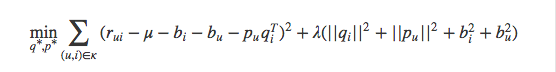

- 00 开篇词 用知识去对抗技术不平等.md.html
- 01 你真的需要个性化推荐系统吗_.md.html
- 02 个性化推荐系统有哪些绕不开的经典问题？.md.html
- 03 这些你必须应该具备的思维模式.md.html
- 04 画鬼容易画人难：用户画像的“能”和“不能”.md.html
- 05 从文本到用户画像有多远.md.html
- 06 超越标签的内容推荐系统.md.html
- 07 人以群分，你是什么人就看到什么世界.md.html
- 08 解密“看了又看”和“买了又买”.md.html
- 09 协同过滤中的相似度计算方法有哪些.md.html
- 10 那些在Netflix Prize中大放异彩的推荐算法.md.html
- 11 Facebook是怎么为十亿人互相推荐好友的.md.html
- 12 如果关注排序效果，那么这个模型可以帮到你.md.html
- 13 经典模型融合办法：线性模型和树模型的组合拳.md.html
- 14 一网打尽协同过滤、矩阵分解和线性模型.md.html
- 15 深度和宽度兼具的融合模型 Wide and Deep.md.html
- 16 简单却有效的Bandit算法.md.html
- 17 结合上下文信息的Bandit算法.md.html
- 18 如何将Bandit算法与协同过滤结合使用.md.html
- 19 深度学习在推荐系统中的应用有哪些_.md.html
- 20 用RNN构建个性化音乐播单.md.html
- 21 构建一个科学的排行榜体系.md.html
- 22 实用的加权采样算法.md.html
- 23 推荐候选池的去重策略.md.html
- 24 典型的信息流架构是什么样的.md.html
- 25 Netflix个性化推荐架构.md.html
- 26 总览推荐架构和搜索、广告的关系.md.html
- 27 巧妇难为无米之炊：数据采集关键要素.md.html
- 28 让你的推荐系统反应更快：实时推荐.md.html
- 29 让数据驱动落地，你需要一个实验平台.md.html
- 30 推荐系统服务化、存储选型及API设计.md.html
- 31 推荐系统的测试方法及常用指标介绍.md.html
- 32 道高一尺魔高一丈：推荐系统的攻防.md.html
- 33 和推荐系统有关的开源工具及框架介绍.md.html
- 34 推荐系统在互联网产品商业链条中的地位.md.html
- 35 说说信息流的前世今生.md.html
- 36 组建推荐团队及工程师的学习路径.md.html
- 加餐 推荐系统的参考阅读.md.html
- 结束语 遇“荐”之后，江湖再见.md.html
- 捐赠
10 那些在Netflix Prize中大放异彩的推荐算法
早在前几篇务虚的文章中，我就和你聊过了推荐系统中的经典问题，其中有一类就是评分预测。
让我摸着自己的良心说，评分预测问题只是很典型，其实并不大众，毕竟在实际的应用中，评分数据很难收集到，属于典型的精英问题；与之相对的另一类问题行为预测，才是平民级推荐问题，处处可见。
缘起
评分预测问题之所以“虽然小众却十分重要”，这一点得益于十多年前 Netflix Prize 的那一百万美元的悬赏效应。
公元2006年10月2号，对于很多人来说，这只是平凡了无新意的一天，但对于推荐系统从业者来说，这是不得了的一天，美国著名的光盘租赁商 Netflix 突然广发英雄帖，放下“豪”言，这个就是土豪的“豪”，凡是能在他们现有推荐系统基础上，把均方根误差降低10%的大侠，可以瓜分100万美元。消息一出，群贤毕至。
Netflix放出的比赛数据，正是评分数据，推荐系统的问题模式也是评分预测，也就是为什么说，评价标准是均方根误差了。
这一评分预测问题在一百万美元的加持下，催生出无数推荐算法横空出世，其中最为著名的就是一系列矩阵分解模型，而最最著名的模型就是SVD以及其各种变体。这些模型后来也经受了时间检验，在实际应用中得到了不同程度的开枝散叶。
今天我就来和你细聊一下矩阵分解，SVD及其最有名的变种算法。
矩阵分解
为什么要矩阵分解
聪明的你也许会问，好好的近邻模型，一会儿基于用户，一会儿基于物品，感觉也能很酷炫地解决问题呀，为什么还要来矩阵分解呢？
刨除不这么做就拿不到那一百万的不重要因素之外，矩阵分解确实可以解决一些近邻模型无法解决的问题。
我们都是读书人，从不在背后说模型的坏话，这里可以非常坦诚地说几点近邻模型的问题：
- 物品之间存在相关性，信息量并不随着向量维度增加而线性增加；
- 矩阵元素稀疏，计算结果不稳定，增减一个向量维度，导致近邻结果差异很大的情况存在。
上述两个问题，在矩阵分解中可以得到解决。矩阵分解，直观上说来简单，就是把原来的大矩阵，近似分解成两个小矩阵的乘积，在实际推荐计算时不再使用大矩阵，而是使用分解得到的两个小矩阵。
具体说来就是，假设用户物品的评分矩阵A是m乘以n维，即一共有m个用户，n个物品。我们选一个很小的数k，这个k比m和n都小很多，比如小两个数量级这样，通过一套算法得到两个矩阵U和V，矩阵U的维度是m乘以k，矩阵V的维度是n乘以k。
这两个矩阵有什么要求呢？要求就是通过下面这个公式复原矩阵A，你可以点击文稿查看公式。
\[ U_{m\\times{k}}V_{n\\times{k}}^{T} \\approx A_{m\\times{n}}\]
类似这样的计算过程就是矩阵分解，还有一个更常见的名字叫做SVD；但是，SVD和矩阵分解不能划等号，因为除了SVD还有一些别的矩阵分解方法。
1 基础的SVD算法
值得一说的是，SVD全称奇异值分解，属于线性代数的知识;然而在推荐算法中实际上使用的并不是正统的奇异值分解，而是一个伪奇异值分解（具体伪在哪不是本文的重点）。
今天我介绍的SVD是由Netflix Prize中取得骄人成绩的Yehuda Koren提出的矩阵分解推荐算法。
按照顺序，首先介绍基础的SVD算法，然后是考虑偏置信息，接着是超越评分矩阵增加多种输入，最后是增加时间因素。好，一个一个来。
前面已经从直观上大致说了矩阵分解是怎么回事，这里再从物理意义上解释一遍。矩阵分解，就是把用户和物品都映射到一个k维空间中，这个k维空间不是我们直接看得到的，也不一定具有非常好的可解释性，每一个维度也没有名字，所以常常叫做隐因子，代表藏在直观的矩阵数据下面的。
每一个物品都得到一个向量q，每一个用户也得到一个向量p。对于物品，与它对应的向量q中的元素，有正有负，代表着这个物品背后暗藏的一些用户关注的因素。
对于用户，与它对应的向量p中的元素，也有正有负，代表这个用户在若干因素上的偏好。物品被关注的因素，和用户偏好的因素，它们的数量和意义是一致的，就是我们在矩阵分解之处人为指定的k。
举个例子，用户u的向量是pu，物品i的向量是qi，那么，要计算物品i推荐给用户u的推荐分数，直接计算点积即可：
\[ \\hat{r}_{ui} = p_{u}q_{i}^{T}\]
看上去很简单，难在哪呢？难在如何得到每一个用户，每一个物品的k维向量。这是一个机器学习问题。按照机器学习框架，一般就是考虑两个核心要素：
- 损失函数；
- 优化算法。
SVD的损失函数是这样定义的：
\[ \\min_{q^{\* },p^{\* } } \\sum_{(u,i) \\in \\kappa }{(r_{ui} - p_{u}q_{i}^{T})^{2} + \\lambda (||q_{i}||^{2} + ||p_{u}||^{2})} \]
理解SVD的参数学习过程并不是必须的，如果你不是算法工程师的话不必深究这个过程。
由于这个公式略复杂，如果你正在听音频，就需要自己看一下图片。这个损失函数由两部分构成，加号前一部分控制着模型的偏差，加号后一部分控制着模型的方差。
前一部分就是：用分解后的矩阵预测分数，要和实际的用户评分之间误差越小越好。
后一部分就是：得到的隐因子向量要越简单越好，以控制这个模型的方差，换句话说，让它在真正执行推荐任务时发挥要稳定。这部分的概念对应机器学习中的过拟合，有兴趣可以深入了解。
整个SVD的学习过程就是：
- 准备好用户物品的评分矩阵，每一条评分数据看做一条训练样本；
- 给分解后的U矩阵和V矩阵随机初始化元素值；
- 用U和V计算预测后的分数；
- 计算预测的分数和实际的分数误差；
- 按照梯度下降的方向更新U和V中的元素值；
- 重复步骤3到5，直到达到停止条件。
过程中提到的梯度下降是优化算法的一种，想深入了解可以参见任何一本机器学习的专著。
得到分解后的矩阵之后，实质上就是得到了每个用户和每个物品的隐因子向量，拿着这个向量再做推荐计算就简单了，哪里不会点哪里，意思就是拿着物品和用户两个向量，计算点积就是推荐分数了。
2 增加偏置信息
到现在，你已经知道基础的SVD是怎么回事了。现在来多考虑一下实际情况，试想一下：有一些用户会给出偏高的评分，比如标准宽松的用户；有一些物品也会收到偏高的评分，比如一些目标观众为铁粉的电影，甚至有可能整个平台的全局评分就偏高。
所以，原装的SVD就有了第一个变种：把偏置信息抽出来的SVD。
一个用户给一个物品的评分会由四部分相加：
\[\\hat{r}_{ui} = \\mu + b_{i} + b_{u} + p_{u}q_{i}^{T} \]
从左至右分别代表：全局平均分、物品的评分偏置、用户评分的偏置、用户和物品之间的兴趣偏好。
针对前面三项偏置分数，我在这里举个例子，假如一个电影评分网站全局平均分是3分，《肖申克的救赎》的平均分比全局平均分要高1分。
你是一个对电影非常严格的人，你一般打分比平均分都要低0.5，所以前三项从左到右分别就是3，1，-0.5。如果简单的就靠这三项，也可以给计算出一个你会给《肖申克的救赎》打的分数，就是3.5。
增加了偏置信息的SVD模型目标函数稍有改变：

和基本的SVD相比，要想学习两个参数：用户偏置和物品偏置。学习的算法还是一样的。
3 增加历史行为
探讨完增加偏执信息的SVD后，接着你再思考一个问题：有的用户评分比较少。事实上这很常见，相比沉默的大多数，主动点评电影或者美食的用户是少数。
换句话说，显式反馈比隐式反馈少，那么能不能利用隐式反馈来弥补这一点呢？另外，再考虑多一点，对于用户的个人属性，比如性别等，是不是也可以加入到模型中来弥补冷启动的不足呢？
是的，都是可以的，在SVD中结合用户的隐式反馈行为和属性，这套模型叫做SVD++。
先说隐式反馈怎么加入，方法是：除了假设评分矩阵中的物品有一个隐因子向量外，用户有过行为的物品集合也都有一个隐因子向量，维度是一样的。把用户操作过的物品隐因子向量加起来，用来表达用户的兴趣偏好。
类似的，用户属性，全都转换成0-1型的特征后，对每一个特征也假设都存在一个同样维度的隐因子向量，一个用户的所有属性对应的隐因子向量相加，也代表了他的一些偏好。
综合两者，SVD++的目标函数中，只需要把推荐分数预测部分稍作修改，原来的用户向量那部分增加了隐式反馈向量和用户属性向量：
\[ \\hat{r}_{ui} = \\mu + b_{i} + b_{u} + \\- (p_{u} + |N(u)|^{-0.5}\\sum_{i\\in{N(u)}}{x_{i}} + \\sum_{a\\in{A{u}}}{y_{a}})q_{i}^{T} \]
- （滑动查看完整公式）
学习算法依然不变，只是要学习的参数多了两个向量：x和y。一个是隐式反馈的物品向量，另一个用户属性的向量。
这样一来，在用户没有评分时，也可以用他的隐式反馈和属性做出一定的预测。
4 考虑时间因素
截止到目前，我们还没有正视过一个人性：人是善变的。这个是一个广义的评价，我们在进步也是在变化，今天的我们和十年前的我们很可能不一样了。这是常态，因此，在SVD中考虑时间因素也变得顺理成章。
在SVD中考虑时间因素，有几种做法：
- 对评分按照时间加权，让久远的评分更趋近平均值；
- 对评分时间划分区间，不同的时间区间内分别学习出隐因子向量，使用时按照区间使用对应的隐因子向量来计算；
- 对特殊的期间，如节日、周末等训练对应的隐因子向量。
总结
至此，我们介绍了在Netflix Prize比赛中最为出众的模型：SVD及其一些典型的改进。改进方案分别是：
- 考虑偏置信息；
- 考虑隐式反馈和用户属性；
- 考虑时间因素。- 其实Netflix Prize比赛上诞生了很多其他优秀的算法，或者把一些已有的算法应用得到很好的效果，比如受限玻尔兹曼机用来融合多个模型，这个我会在后面的专栏文章中专门再讲。
好了，最后我要给你留一个思考题，假如矩阵分解面对的数据不是评分数据，而是行为数据，那么今天讲到的损失函数是否依然有效呢？欢迎留言一起讨论。感谢你的收听，我们下次再见。

© 2019 - 2023 Liangliang Lee. Powered by gin and hexo-theme-book.